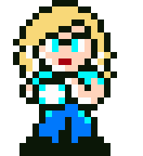
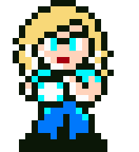

Mega Man 8-bit Deathmatch Skin

 

Download
This is my skin for the fan game Mega Man 8-bit Deathmatch. For those unaware, it's an arena shooter built using the DOOM engine which uses characters, weapons, and environments taken the Mega Man series. The gameplay is unique from most arena shooters because there is no hitscan. Instead, weapons create projectiles which can move in unique ways depending on the weapon. This system and the variety in weapons and environments makes it one of my favorite games to play with friends.